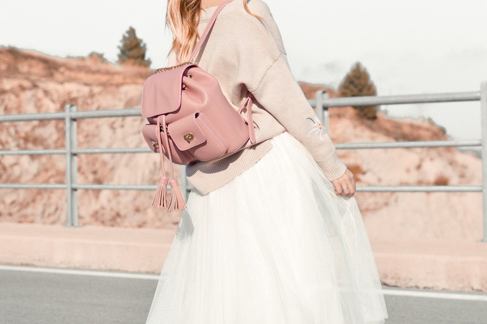
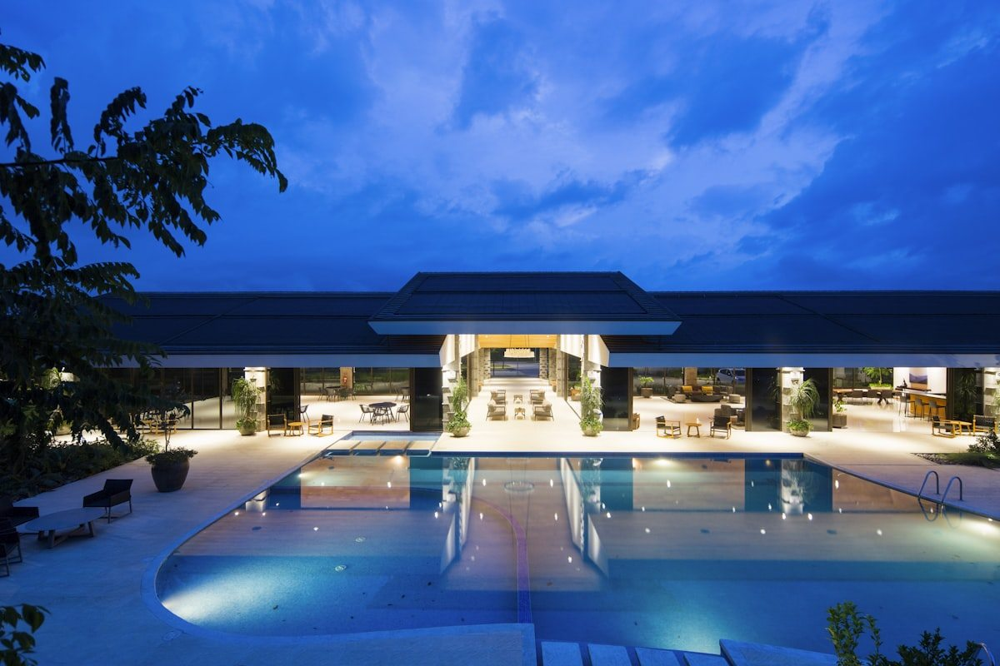
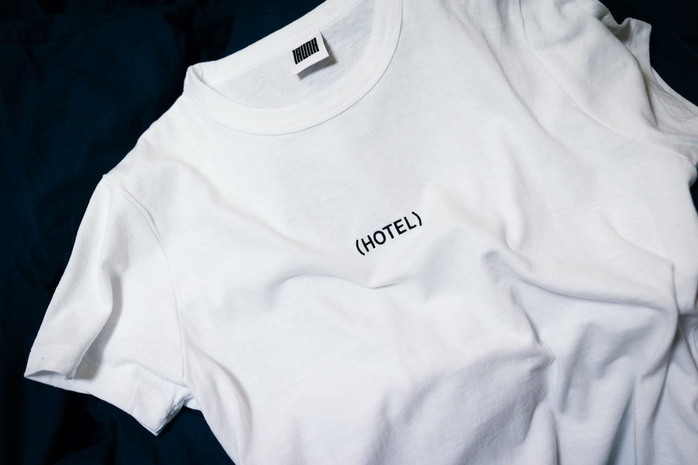
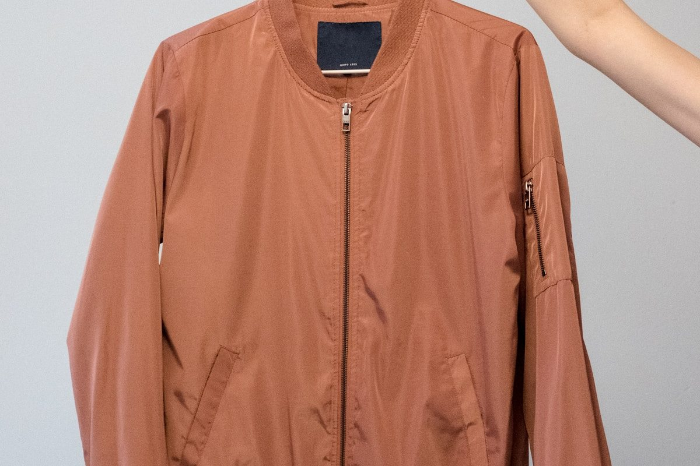

Zero Wind Penetration. Uncompromising Breathability.
Conquer alpine summits and stormy mountain trails with technical windbreaker jackets engineered with 3-layer microporous membranes and diamond ripstop nylon.
Defeating Wind Chill Without Trapping Body Heat
At WindbreakGear, we view wind not merely as weather, but as an aggressive convective heat-stripper that robs core body warmth within minutes on exposed alpine ridges.
-
•
0.0 CFM Wind Permeability: True zero-cubic-feet-per-minute wind blocking eliminates convective thermal strip down to -20°F.
-
•
25,000 g/m²/24hr Breathability: Hydrophobic microporous ePTFE membranes vent aerobic sweat vapor rapidly during uphill treks.
-
•
Ultrasonic Seam Welding: 13mm micro-tape sealed seams that withstand 28,000mm hydrostatic water column pressures.

High-Performance Windproof Jackets
From featherweight 110-gram running wind shells to expedition-grade storm hardshells designed for freezing blizzards.

The Summit Ridge Hard Shell
Engineered for technical mountaineering with 70-denier Cordura ripstop shoulders, dual pit zips, and a helmet-compatible storm hood.
View SpecificationsThe Zephyr Packable Wind Shell
Compresses into its own chest pocket down to the size of an apple, weighing a mere 115 grams with instantaneous wind resistance.
View Specifications
The Traverse Hybrid Wind Jacket
Combines wind-blocking front chest panels with 4-way stretch breathable underarm gussets for high-output mountain biking and climbing.
View SpecificationsThe Science of Boundary Layer Wind Deflection
When wind strikes conventional outdoor clothing, high dynamic pressure forces cold air through woven fabric pores, displacing the microscopic layer of warm air trapped adjacent to the skin.
Our proprietary StormWeave textile structure integrates billions of microscopic pores per square centimeter—each 20,000 times smaller than a water droplet, yet 700 times larger than a water vapor molecule. This tortuous pore matrix stops 60 mph gale-force winds dead in their tracks while permitting metabolic perspiration vapor to diffuse freely outwards.
Request Technical Lab ReportPrecision Details Engineered for Harsh Mountain Elements
Every zipper pull, seam line, and hood cinch is calculated for tactile operation with heavy mountaineering gloves.

Covert Cinch Storm Hood
Features laminated wire brims and internal Cohaesive cord locks that swivel seamlessly with your head, maintaining unobstructed peripheral vision.

YKK Aquaguard Zippers
Matte polyurethane-laminated tooth arrays combined with internal draft flaps provide 100% barrier protection against driving horizontal rain.
Diamond Ripstop Grid
Cross-hatched ultra-high-molecular-weight polyethylene reinforcing threads arrest fabric tears before punctures can propagate across jacket panels.
The Four Pillars of WindbreakGear Craftsmanship
Built in small technical batches under strict quality control standards for lifelong alpine durability.
-
1.
Laser Pattern Cutting: Digital CAD laser tables cut shell patterns with 0.1mm tolerance, sealing raw textile edges to eliminate fraying.
-
2.
Thermo-Bonded Seam Taping: Hot-air bonded 3-layer polyurethane tape welded over all stitch lines under 4.5 bars of pneumatic pressure.
-
3.
Fluorocarbon-Free C0 DWR: Eco-friendly plant-based hydrophobic coating that forces water to bead into spheres and roll off instantly.
-
4.
Hydrostatic Pressure Testing: Every production batch is certified to withstand 28,000mm water column pressure without leaking.

The Mercer Street Outerwear Design Studio
Located at 181 Mercer Street in SoHo, New York, our studio serves as our primary prototyping workshop, wind simulation testing center, and private fitting lounge.
Bring your specific outdoor expedition requirements—whether traversing the Presidential Range or running high-altitude mountain ultras—and our technical outerwear specialists will custom-tailor sleeve lengths and layering allowances.
Mercer Atelier Visiting Hours:
Tuesday – Saturday: 10:00 AM – 6:30 PM EST
Private Technical Fittings: By Appointment
Endorsed by Mountain Guides and Ultra Athletes
Read verbatim dispatches from climbers and runners who trust WindbreakGear on the world's most unforgiving peaks.
“Guiding in the Cascades means enduring 50-knot freezing winds and sudden sleet storms. The Summit Ridge jacket blocked every gust while keeping my base layers bone dry during high-exertion ascents.”
“The Zephyr wind shell is a marvel of packability. It takes up negligible space in my race vest, and deploying it on exposed ridgelines instantly cuts the chill. An absolute game-changer for mountain ultras.”
“Finding a shell with true zero CFM wind penetration that doesn't feel like a plastic trash bag is nearly impossible. WindbreakGear engineered the best breathable storm membrane on the market.”
Frequently Asked Outerwear Inquiries
Expert advice on DWR re-activation, washing technical membranes, and selecting the optimal jacket weight.
Never Let the Mountain Wind Turn You Back
Invest in technical windbreaker jackets built with aerodynamic boundary-layer physics, military-grade ripstop textiles, and lifetime seam-taped craftsmanship.